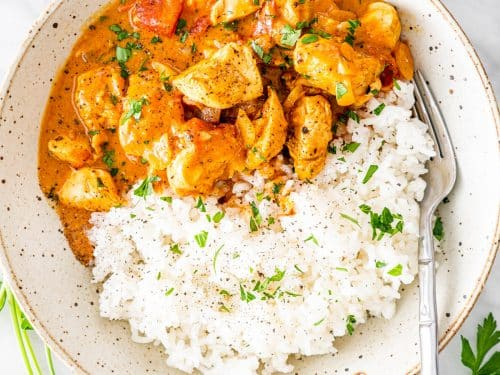

My Favorite things
My favorite Sport
Even though soccer is not for me physically since I cant score any goals, I like soccer because it ivolve mostly moving your feet instead of using your hands, like basketball, or footbal. My favorite team is USA mens national soccer team.

My favorite foods
Food is very important, and you need food to survive. But their is some food out their that I most likely enjoy. So here are some of my favorite foods ever, including.- Pizza
- chicken
- burger
- noodles
- curry 
My favorite video games